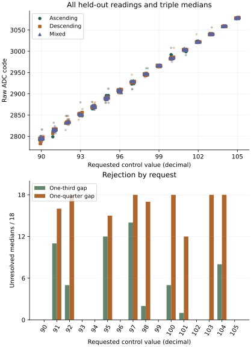
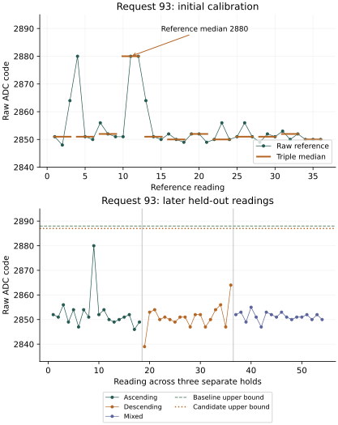

First return: 1 October 2026
Complete acquisition and nominal median recognition were achieved under both declared rules. All 1,080 acquisitions, 1,080 operation records and 8,798 native journal records were recovered. Each rule recognized all 108 nominal test medians: 18 at each of the six nominal requests. No nominal test median was wrong-state, unresolved or unavailable. The candidate safety-benefit criterion was not met: there was no baseline wrong-state assignment to reduce.
| Outcome | One-third gap | One-quarter gap |
|---|---|---|
| Correct nominal medians | 108 / 108 | 108 / 108 |
| Nominal median exceptions | 0 | 0 |
| Unresolved nominal raw readings | 2 / 324 | 3 / 324 |
| Assigned intermediate medians | 122 / 180 | 30 / 180 |
| Unresolved intermediate medians | 58 / 180 | 150 / 180 |
The narrower candidate preserved every correct nominal median while rejecting 92 additional intermediate medians. Intermediate settings have no declared correct state, so this is a change in acceptance coverage, not a demonstrated reduction in recognition errors. The minimum nominal median margin was six ADC codes under the baseline and five under the candidate.

A consecutive excursion entered calibration
At nominal request 93, reference readings 10–12 were 2851, 2880, 2880, producing a median of 2880. The other eleven reference medians ranged from 2850 to 2852. The two-code guarded reference interval consequently reached 2882 before either gap extension. The final state-1 interval was 2832–2888 under the baseline and 2836–2887 under the candidate.
The preceding compact return used state-1 bounds 2831–2870 and rejected a test median of 2880. In this run, the same value occurred during reference acquisition and therefore contributed to the declared calibration. During the later ascending visit, request 93 produced the triple 2854, 2851, 2880, whose median was 2854. All eighteen held-out medians at request 93 ranged from 2849 to 2856. Median recognition therefore passed while the high raw observation remained present and lay within both newly calibrated intervals.

The consecutive reference readings occurred near counter times 2.678 and 2.713 seconds. Both control readbacks matched request 93; first and repeated ADC octets agreed, and sample and operating-guard statuses were successful. Every operation profile was zero added wait. This recurrence does not require the added arithmetic or RAM operations from the preceding investigation. Its electrical or acquisition mechanism remains unresolved.
Coverage across the requested range
Every request received 54 held-out readings and 18 medians. The six nominal requests each produced 18/18 correct medians under both rules. Intermediate assignments and rejections are listed separately; an assigned state is an observed classification, not a truth label.
| Request | Baseline assigned / unresolved | Candidate assigned / unresolved | Assigned state, when accepted |
|---|---|---|---|
| 91 | 7 / 11 | 2 / 16 | 0 |
| 92 | 13 / 5 | 0 / 18 | 1 |
| 94 | 18 / 0 | 18 / 0 | 1 |
| 95 | 6 / 12 | 3 / 15 | 1 |
| 97 | 4 / 14 | 0 / 18 | 2 |
| 98 | 16 / 2 | 1 / 17 | 3 |
| 100 | 13 / 5 | 0 / 18 | 3 |
| 101 | 17 / 1 | 6 / 12 | 4 |
| 103 | 18 / 0 | 0 / 18 | 4 |
| 104 | 10 / 8 | 0 / 18 | 5 |
Rejection boundaries are visible across the range, including requests 100, 101, 103 and 104. Their rejections are expected consequences of the declared intervals and do not establish a component failure. Equal exposure in this boot produced no nominal median exception at any request; that observation cannot locate or exclude the cause of rarer excursions.
Raw nominal observations still differed from median outcomes. Request 90 recorded one 2816 reading during the descending visit and another during the mixed visit; both rules rejected those individual readings while their medians remained correct. Request 102 recorded one 3040 reading in the descending visit, accepted by the baseline and rejected by the candidate; its median also remained correct. These are diagnostic raw classifications, separate from the predeclared median criterion. Initial reference acquisition at request 99 also retained an isolated 3008 reading; its triple median was 2965.
| State | Nominal request | Reference median range | Baseline interval | Candidate interval |
|---|---|---|---|---|
| 0 | 90 | 2791–2796 | 2773–2814 | 2777–2810 |
| 1 | 93 | 2850–2880 | 2832–2888 | 2836–2887 |
| 2 | 96 | 2905–2909 | 2897–2926 | 2898–2922 |
| 3 | 99 | 2961–2968 | 2944–2984 | 2948–2981 |
| 4 | 102 | 3017–3023 | 3001–3041 | 3004–3037 |
| 5 | 105 | 3077–3079 | 3059–3097 | 3063–3093 |
The five baseline rejection gaps contained 17, 8, 17, 16 and 17 integer ADC codes. Candidate gaps contained 25, 10, 25, 22 and 25. The smallest gap is between states 1 and 2, where the high state-1 reference median reduces the available separation.
Recording and returned evidence
Acquisition took 37.934 seconds. The terminal report counter was 384.767 seconds, approximately 6 minutes 25 seconds, after four completed journal write/readbacks. It precedes its own write/readback and does not independently measure the powered duration. The prescribed allowance was 10 minutes.
All sample and operating-guard statuses were successful, both control readbacks matched every request, and all first/repeated ADC octet pairs agreed. Measured CPU frequency ranged from 1499971895 to 1500028881 Hz; raw thermal status ranged from 67312 to 67329. These digital checks do not independently establish conversion freshness or calibrated analog accuracy.
Both read-only 96 MiB captures matched. The frozen pre-run reader reproduces the saved analysis, and seven independent return checks passed. Boot files and the preserved earlier journal are unchanged. Seven boot-volume metadata sectors changed; the returned bytes do not establish their writer or timing.
Acquisition record · Decoded observations · Assessment and figure inputs · Provenance · Evidence index
Question and rationale
Do exceptions concentrate in the lower requests when the whole previously used range receives equal exposure, and can narrower acceptance intervals reject incorrect assignments while retaining useful nominal coverage? The preceding compact return recovered 120 correct, 23 unresolved and one wrong-state decision among 144 medians. Request 91 crossed its fixed state-0 boundary under every operation profile. The triple 2832, 2832, 2811 was assigned to state 1; request 93 separately produced the unresolved triple 2864, 2880, 2881. A three-reading median therefore retained two consecutive excursions.
That return sampled requests 90, 91 and 93 only. It cannot establish that higher requests are exempt. Earlier calibration renewal and reference tolerance results also recorded exceptions or overlaps beyond the lowest states. This investigation equalizes exposure over requests 90 through 105 and distinguishes nominal recognition from intermediate boundary mapping.
Smaller accepted intervals leave larger rejection gaps. This changes the response to an observation; it does not physically separate overlapping distributions. The candidate is a predefined fractional alternative to the existing gap-extension rule. No test observation selects its parameters or moves its boundaries.
Acquisition sequence
Numerical settings and counts in this protocol use decimal notation. First acquire 36 reference readings at each nominal request: 90, 93, 96, 99, 102 and 105. Twelve disjoint triple medians per nominal request supply both calibrations. Then acquire 18 consecutive readings at every integer request from 90 through 105 in each of three visits:
| Visit | Request order | Readings |
|---|---|---|
| 1 | 90 through 105, ascending | 288 |
| 2 | 105 through 90, descending | 288 |
| 3 | 98, 90, 103, 95, 100, 92, 105, 97, 94, 102, 91, 99, 96, 104, 93, 101 | 288 |
There are 1,080 acquisitions: 216 initial references and 864 held-out readings. Every request receives 54 held-out readings and 18 disjoint test medians. The six nominal requests contribute 108 medians with declared expected states 0 through 5. The ten intermediate requests contribute 180 mapping medians with no expected state. Descriptor marker 6 denotes absence of an expected state; it is not an additional electrical state. Sixteen requested control values do not constitute a sixteen-state recognition test.
All visits retain zero added wait and operation profile 0. Existing operating guards, mandatory settling, ADC access, repeated result-octet reads and restoration remain unchanged. All 18 readings in each hold are retained, including the transition into it; none is discarded as warm-up. The order is fixed before execution. Order and visit are confounded within one boot, and predecessor sequences are not fully balanced.
Paired rules and assessment
For each nominal state, take the minimum and maximum of its twelve reference medians and extend each end by two ADC codes. Reject the complete calibration if a guarded bound leaves the ADC domain or adjacent guarded intervals lack at least one unassigned integer. Let g denote the number of unassigned integer codes between adjacent guarded intervals.
| Rule | Extension at each neighbouring edge | Purpose |
|---|---|---|
| Baseline | floor(g / 3) | Preserve the existing recognition rule. |
| Candidate | floor(g / 4) | Accept less of each reference gap and retain a larger rejection region. |
The two outer edges use the extension derived from their nearest gap, clipped to the ADC domain. Both rules retain the same reference extrema and two-code guard. The one-quarter fraction is declared prospectively as a smaller fractional extension; it is not a claim of optimality. The PC reconstructs both sets of intervals from the initial native reference journal after return. Neither candidate classification nor interval fitting runs in the target acquisition loop.
Classify each disjoint held-out triple median once under each rule. At nominal requests, retain correct, wrong-state, unresolved and unavailable outcomes separately. At intermediate requests, report the assigned state or rejection without calling an assignment correct or wrong. Report paired decision transitions, counts by request and visit, raw and median histograms, nominal margins, and consecutive raw and median exception runs within each hold. Preserve all raw rows, including timing, previous request, control readbacks, ADC octets, guard measurements and error statuses.
Acquisition and recording require all 1,080 observations, successful operating checks and restoration, four complete journals, and the terminal report. Complete nominal recognition requires 108 correct medians for each rule separately. A candidate safety benefit requires fewer nominal wrong-state assignments without losing a previously correct decision or increasing unavailable outcomes. Wrong-to-unresolved rejection is reported as rejection, never as recovered recognition. If correct decisions are also lost, report that tradeoff. If the baseline has no wrong-state decision, this boot cannot demonstrate their reduction.
A contiguous run of rejected samples is preserved even when its triple median is accepted. Invalid or incomplete calibration yields unavailable recognition; failed observations are retained without replacement or success-seeking retries. Missing terminal or visit records prevent complete-run qualification. Raw observations may remain usable as explicitly incomplete evidence.
Interpretation and next decisions
The first return supports complete nominal median recognition under both rules in one boot. It establishes that larger rejection gaps can preserve those nominal decisions while reducing intermediate acceptance. It does not demonstrate fewer wrong-state decisions, and it exposes a separate dependency: an isolated high reference median can broaden both rules before testing begins.
The next investigation should assess reference repeatability with two disjoint reference sets per nominal request, retaining both sets and deriving their intervals separately. Their disagreement and coverage of held-out observations should be declared in advance, with zero added wait retained. This would test whether calibration excursions recur and how strongly they alter later acceptance. It should not automatically discard a high observation or expand bounds until recognition succeeds. A future SEIGRASM qualification step needs evidence for how it distinguishes repeatable range from uncertain calibration.
If nominal settings remain stable while intermediate settings approach rejection edges, the result supports a boundary-margin explanation for those intermediate cases. If consecutive excursions also occur at nominal settings, shrinking acceptance intervals can change their classification but leaves their physical or acquisition cause unresolved. An excursion that falls well inside another state's interval cannot be rejected by a modest edge reduction. Report this directly.
Compare every request with its equal exposure denominator before assessing concentration in the lower range. A single boot cannot establish reliable exception rates or isolate order from elapsed time. Recurrent nominal excursions can motivate a subsequent duration-matched operation comparison; discrepancies linked to acquisition ordering can motivate an independently written, equivalent readout path. Those are later controlled comparisons, not additional variables in this run.
SEIGRASM and Hyphos must qualify the controls, observation domain, timing, limits and restoration available in each encountered silicon arrangement. This experiment contributes a reusable method for that qualification. Its measured bounds remain specific to this apparatus and its conditions. Component addresses and control range are supplied here; automatic capability discovery and cross-cluster equivalence are not demonstrated.
The executable path remains the existing entry and timebase binding, then literal SEIGRASM operating supervision, electrical acquisition, restoration, pin release and native senary SD journaling. No target instruction region changes. PC tooling copies literal instructions and schedule data and independently decodes the return. The existing EEPROM loader, configured entry state and supplied component bindings remain dependencies. This run does not invoke Hyphos creation or establish calibrated absolute voltage, independent conversion freshness, firmware exclusion or a thermal mechanism.
Preparation and run interval
The powered allowance is 10 minutes. The preceding compact return reached its terminal counter near 309 seconds with 7,049 records. This run plans 8,798 records and 1,080 readings. The allowance uses that measured predecessor to estimate the larger workload; completion remains a returned-evidence criterion. The terminal report follows the four visit journal write/readbacks; its own final readback remains unobservable from the returned report alone.
Preparation DCFC72CBEF12 passed all 60 supplied-device and evidence checks. Installation completed with 6144 verified transfers, two matching full readbacks while the volume remained locked, and successful ejection. The pre-write backup matches the complete preserved preceding return. The first physical return is recorded above. The SD contains this completed run.
Image SHA-256: 8682fcc884541b22c929837a1b0df012c9d6a4560cdcaef2b49e936da2f98ff4.
Frozen protocol · Manifest · Validation · SD verification · Evidence index